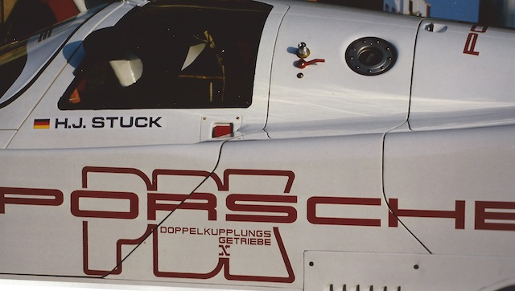
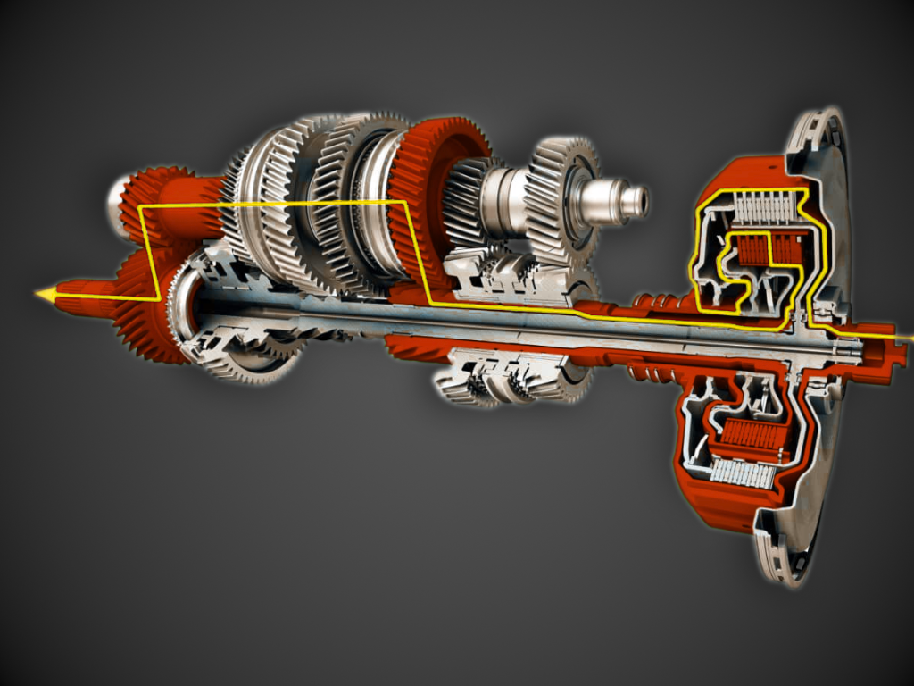
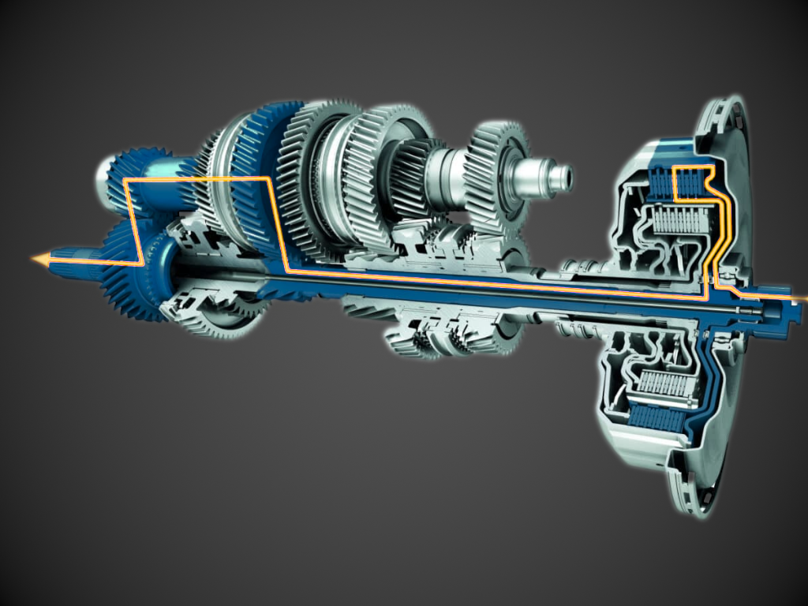

In the Tiptronic post I promised that PDK deserved a blog of its own, because it is genuinely different engineering and the same enthusiasts who dismissed Tiptronic as an automatic wearing a costume treat PDK with real affection. That affection is well earned, but the story is even more interesting. It runs through a prototype that sat forgotten in storage for over a decade, a Le Mans-class race car, and a name that is a brand in itself...
What Is PDK, and Why Is It So Famous
PDK stands for Porsche-Doppelkupplungsgetriebe, German for Porsche dual-clutch transmission. Mechanically it is built from two half-transmissions, what Porsche itself calls sub-transmissions, sharing one case. One handles the odd-numbered gears, the other the even-numbered gears and reverse, and each rides its own concentric shaft with its own clutch. For instance, while the car accelerates in third gear, fourth is already selected and waiting on the idle shaft, simply not clutched in yet. The shift itself amounts to nothing more than one clutch opening as the other closes.
That handover happens in around 100 milliseconds either way; up- or downshift, well under half the time a skilled driver needs to heel-and-toe a downshift by hand and legs. Both clutches also stay mechanically connected to the engine at all times, unlike a torque-converter automatic's fluid coupling, so throttle response through a PDK stays immediate rather than passing through anything that can slip or lag.
None of that fully explains the devotion PDK gets, though. Ask Porsche owners why they rave about it and the answers tend to circle the same idea, that it lets a driver stop thinking about the mechanics of shifting and just drive, hitting every apex and every gear change without risking a missed heel-toe downshift or an over-revved engine. Every shift landing exactly where it should frees up attention for the road instead of the mechanics of shifting itself, and driving one hard settles into something close to a flow state a manual can't quite reach. That tension, between a gearbox that is objectively faster and one some drivers still refuse to trade for anything with a clutch pedal, is basically the whole PDK story in miniature.
Versus 200–400 ms for a skilled driver's heel-and-toe downshift.
Origins — A Prototype Twenty Years Ahead of Itself
The idea behind PDK is much older than it was first introduced. Back in the late 1960s, Porsche engineer Imre Szodfridt pitched a dual-clutch gearbox to Ferdinand Piëch, then Porsche's Head of Development (yes, the same man who drew the first prototype of a W16 engine on the back of an envelope, on a Japanese bullet train). Szodfridt's idea went nowhere at the time, simply because the electronics and hydraulics of the era had no way of controlling two clutches precisely enough to make it work.
It sat in storage until 1981, when engineer Rainer Wüst's team dug the old prototype out and rebuilt its pneumatic valves to run hydraulically instead. The first road tests happened in modified 924s and 944 Turbos, shifted through a simple lever with no clutch pedal at all, push forward to downshift and pull back to upshift. That direction was reportedly suggested by racing driver Jacky Ickx, on the logic that braking already pushes a driver forward in the seat, so the downshift motion should follow the same direction as their body.
The real proving ground, though, was motorsport. Porsche tested the gearbox in the 956 LeMans Racecar before racing it properly in the 962, specifically the 962 C Racecar, where Hans-Joachim Stuck is credited with the idea of moving the shifters onto the steering wheel itself. Early clutch control was far from sorted, and every shift produced a hard jerk through the driveshaft, bad enough that this excess torque nearly took the whole test program apart. But rather than solve that jerk outright before racing, the team used the kick forward as a genuine performance advantage on track instead, only dialing it out once the transmission moved toward road use. Not only LeMans, but it paid off in the Rally world as well. The Audi Sport Quattro S1, running Porsche's dual-clutch system, won the Semperit Rallye at the end of 1985 in its first outing with Walter Röhrl driving, and the previously mentioned PDK-equipped 962C won at Monza on its own debut in 1986, and took that year's World Sports-Prototype Championship as well.
None of that racing success translated into a production car quickly though. Porsche simply didn't have the budget to industrialize the transmission at the time, and Wüst has since said the team was "at least 20 years ahead of our time." The first dual-clutch transmission to actually reach a customer's driveway wasn't even a Porsche. That honor went to the Volkswagen Golf R32 in 2003, five years before PDK itself reached a production Porsche!
PDK finally arrived as an option on the 911 in 2008, on the facelifted 997, and the contemporary press reaction was close to unanimous. Car Magazine's UK launch review called it "the greatest dual-clutch gearbox we've yet tried," and Porsche's own engineers reportedly told the press at the time that PDK could replace the manual across the whole range within five years, a prediction that turned out to be more or less correct. The only real complaint at launch had nothing to do with how it shifted. Porsche designed the gear lever to have a "push-away" to upshift and "pull-back" to downshift, the opposite of the now natural convention other similar cars had already settled on, and more than one reviewer said they would stick with the manual for that reason alone. It also wasn't available in all high-performance cars yet, since the first PDK could only handle 325 lb-ft of torque, which kept it out of the Turbo, GT3, and GT3 RS until Porsche strengthened the unit for those cars later on.

Here's the timeline, as best as the sources agree on it.
What Goes On Inside a PDK
Strip away the badge and a PDK is mechanically close to a manual gearbox split into two halves. Each sub-transmission carries its own set of gears and its own wet clutch, with the clutch packs running submerged in transmission fluid that lubricates and cools them as they slip and grip. Sitting on top of that mechanical core is what Porsche calls the mechatronic unit, a combined hydraulic and electronic control module that decides which gear to pre-select, when to engage each clutch, and how aggressively to do it depending on the drive mode. It's also, by a wide margin, the single most expensive part of the transmission to replace.
That basic layout, two clutches on concentric shafts, isn't actually unique to Porsche. Volkswagen's own DSG gearbox uses the identical architecture, down to the same solid inner shaft and hollow outer shaft carrying one clutch each. However, PDK carries far more engine braking than a DSG, which tends to coast when the driver lifts off the throttle, and its paddles respond with almost no delay by comparison. The distinction isn't the hardware but the calibration, a deliberate software decision Porsche made because, that is what the customer of a 911 deserves over the customer of a Golf GTI.
That calibration difference matters more than it sounds, because it is really the whole answer to why PDK earned its reputation while so many other dual-clutch boxes didn't. The mechanical gearbox section of a PDK is functionally equivalent to a manual transmission, and about as durable. What actually makes it a computer-controlled gearbox, and what tends to go wrong with it, is the hydraulic section and its sensors bolted on top of that mechanical core.


Current Development, and Where PDK Has Actually Been
PDK today is no longer just a fast-shifting gearbox. Since 2024, on the 911 Carrera GTS, and now the 911 Turbo S as well, Porsche's T-Hybrid system builds an electric motor directly into the PDK housing itself, one that also works as the engine's starter and alternator. That motor adds 54 PS on its own and can feed up to 40 kW back into a small 1.9 kWh battery under braking, paired with an electrically spun turbocharger for near-instant boost. The result is a 992.2 GTS that reaches 100 km/h in 3.0 seconds, three tenths quicker than the non-hybrid car it replaced. PDK, in other words, has quietly become a hybrid component as much as a gearbox.
Not every car having a PDK shares the same badge, either. The 8-speed unit in the current Panamera, built by ZF, is also used in the Bentley Continental GT and the Aston Martin Valhalla, which makes it as much a shared luxury-brand component now as a Porsche-only design. The Macan runs a different story altogether. Its "PDK," by the account of Porsche's own then-head of transmission development Wolfgang Hatz, is actually a Porsche-tuned version of Audi's DL501 S-tronic gearbox, built at a Volkswagen factory in Kassel rather than by ZF at all, the same box fitted to the Audi A6 and RS5. Porsche doesn't manufacture either transmission itself. It's really a badge and a calibration philosophy.
There's still one Porsche that doesn't use PDK at all. The Cayenne has kept its 8-speed Tiptronic S, the torque-converter automatic, mostly because a torque converter handles sustained towing loads better than a dual-clutch box does.
But wait.. what if I told you that the already capable PDK is also taken to another level by German tuning specialist 9FF!
The same shop that pushed old Tiptronic-based automatics to 800 to 1,600 horsepower in race applications, does comparable work on modern PDK units. Stock clutch packs are already good for roughly 1,000 Nm of torque, and 9FF pushes past that either by increasing clamping pressure on the clutches, within limits the rest of the hydraulic system and sensors can tolerate, or by fitting more clutch discs into the same physical space using thinner rings, which increases surface area by around 150% and pushes torque capacity up to roughly 1,500 Nm. They also tune the air gap in each clutch's disengaged state, shaving a few more milliseconds off an already fast factory shift.
Reception, Reliability, and the Pain Points
Re-quoting words of many who have experienced a PDK - "You HAVE to try it out flat-out on a track or an open road to truly absorb its finesse." A rare amount of the criticism PDK still gets, in other words, comes from people who never really drove it the way it was meant to be driven.
The reliability picture is relatively mundane. Porsche first announced that PDK fluid is a lifetime fill, but owners and mechanics argue that it doesn't really hold up for anyone who drives the car hard, tracks it, or spends a lot of time in stop-and-go traffic, since heat from the clutch packs slipping degrades that fluid faster. Independent Porsche shops now recommend a fluid change every 30,000 to 40,000 miles for street cars, and after every single track day for anything driven on a circuit. Skip that and the two most common failures might follow, worn clutch packs that shudder on takeoff and hesitate at low speed, and a degraded mechatronic unit that throws fault codes or, in the worst case, drops the car into limp mode. Both are full transmission-out jobs, and the mechatronic unit in particular is the single most expensive part in the whole gearbox to replace. Tellingly, shops that see this failure regularly report that it's almost always occurs downstream of a fluid change that never happened on time, which makes a lot of PDK's reputation for expensive failures a maintenance problem rather than an outright hardware failure.
In unfortunate cases, replacement quotes for a failed PDK have run anywhere from $15,000 to $25,000, and the large majority of those failures trace back to the hydraulic section and its sensors rather than the gears themselves, a recurring theme for almost any automatic transmission built around an electronically controlled clutch.
LOVED HONESTLY
Unlike SMG, TipTronic and other single-clutch gearboxes of the millenium, PDK earns its reputation honestly. It is a really great example of how to make a good automatic transmission. It took Porsche the better part of forty years to get from a shelved prototype to a production car, proven first at Monza and only handed to customers decades later.
This is not a gearbox to be loved for its quirks, but a gearbox to be loved and respected for what it truly does.
Sources
- "What does PDK stand for and what does it do?" — Porsche.comporsche.com — what is PDK
- "Why do yall rave about PDK?" — Reddit (r/Porsche_Cayman)reddit.com — why do yall rave about PDK
- "PDK Explained: Porsche's Dual-Clutch Transmission" — European Speed Clubeuropean-speed-club.com — PDK explained
- "Faster gear change: the history of the PDK" — Porsche Newsroomnewsroom.porsche.com — the history of the PDK
- "The shifting history of Porsche's PDK transmission" — Hagertyhagerty.com — the shifting history of PDK
- "Porsche 911 Carrera PDK (2008) review" — Car Magazine (UK)carmagazine.co.uk — 911 Carrera PDK (2008) review
- "List of ZF transmissions" — Wikipediaen.wikipedia.org/wiki/List_of_ZF_transmissions
- "How a Forgotten Prototype Became Porsche's GREATEST Transmission" — Driven by Matt (YouTube)youtube.com/watch?v=FLlUpghOV6Y
- "PDK vs Manual: Porsche Transmission Service Compared" — Repasi Motorwerksrepasimotorwerks.com — PDK vs manual service compared
- "VW DSG and Porsche PDK similar?" — GOLFMK7 forumgolfmk7.com — VW DSG and Porsche PDK similar
- "PDK Repair Summary" — Rennlist (987 Forum)rennlist.com — PDK repair summary
- "World's Best DCT. Porsche PDK. How it works... Part 1" — Jeff Richardson (YouTube)youtube.com/watch?v=jKQyQNDIHw8
- "What is Porsche T-Hybrid technology?" — Porsche.comporsche.com — what is T-Hybrid
- "Origins of the PDK - Audi, ZF, Unicorn tears, etc." — Porsche Macan Forummacanforum.com — origins of the PDK
- "Porsche Macan" — Wikipediaen.wikipedia.org/wiki/Porsche_Macan
- "We reinforce a double clutch! | 992 PDK reinforcement" — 9FF Engineering (YouTube)youtube.com/watch?v=ITA7ikTBLAc
- "Porsche Doppelkupplungsgetriebe – PDK" — Elferspot Magazinelferspot.com — Porsche Doppelkupplungsgetriebe (PDK)
- "PAG 04 – Porsche 962 PDK-Doppelkupplungsgetriebe" — cede51.decede51.de — Porsche 962 PDK dual-clutch transmission
- "PDK: Twenty Years in the Making" — 9WERKS9werks.co.uk — PDK: Twenty Years in the Making